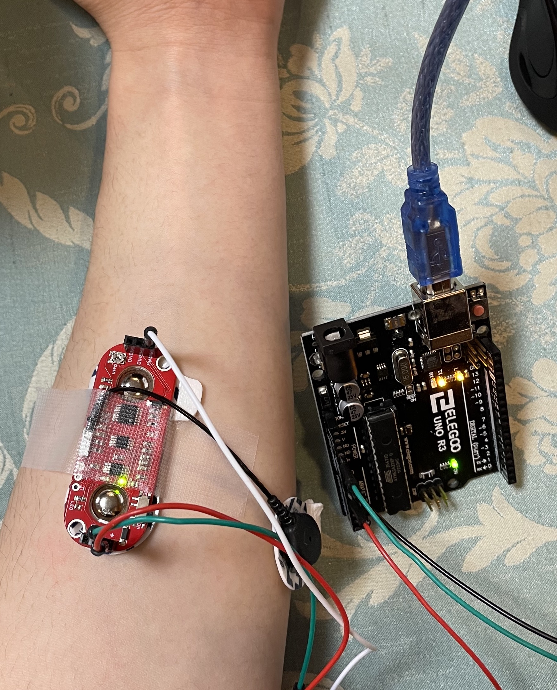
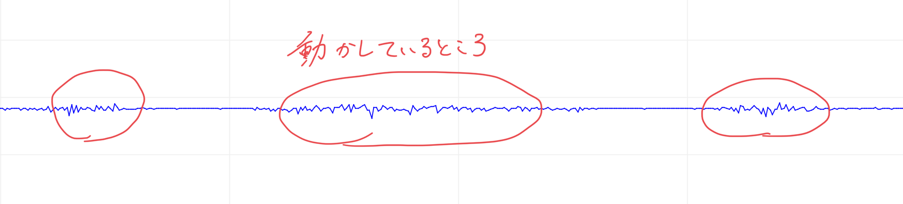
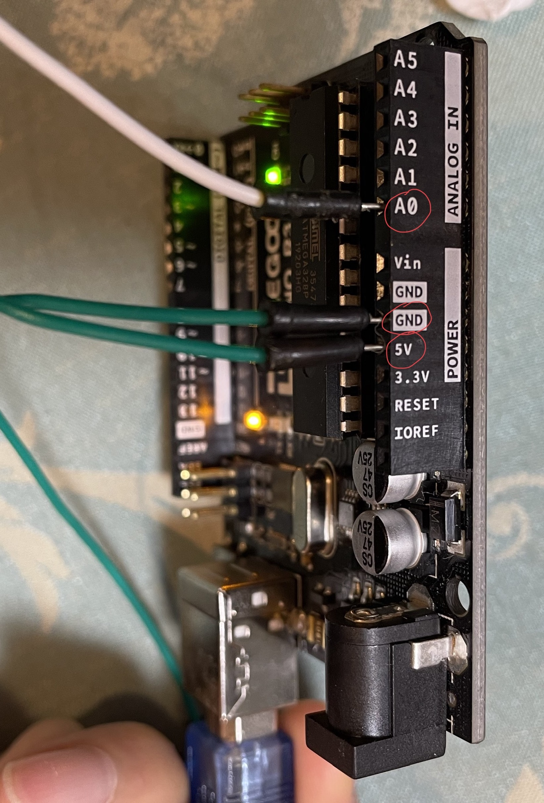
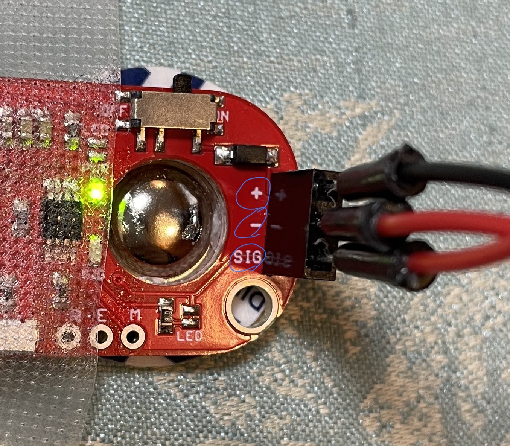
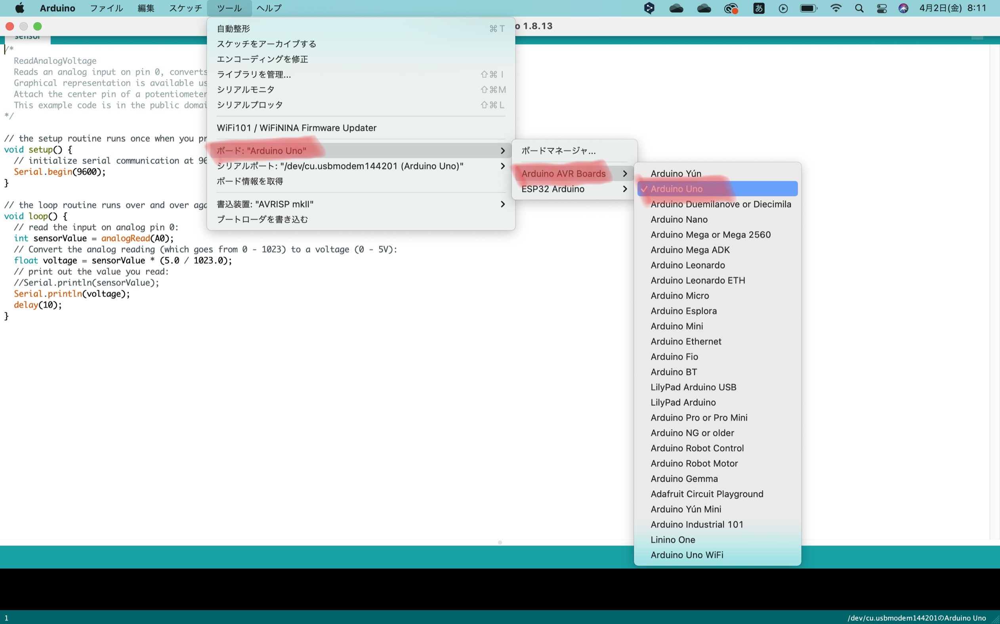
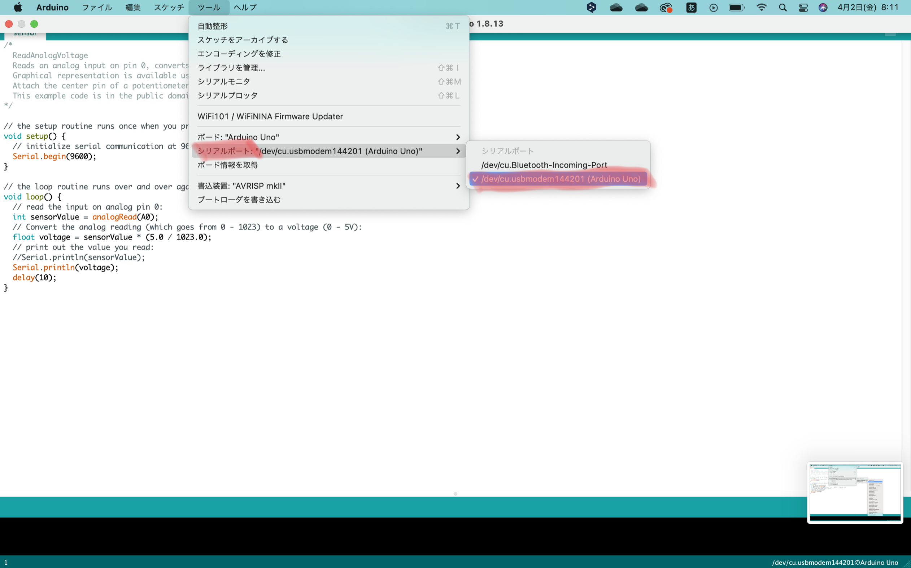
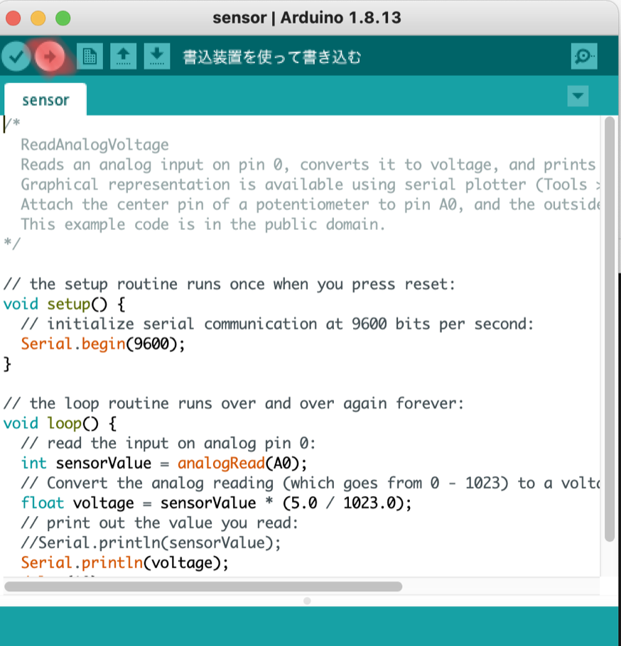
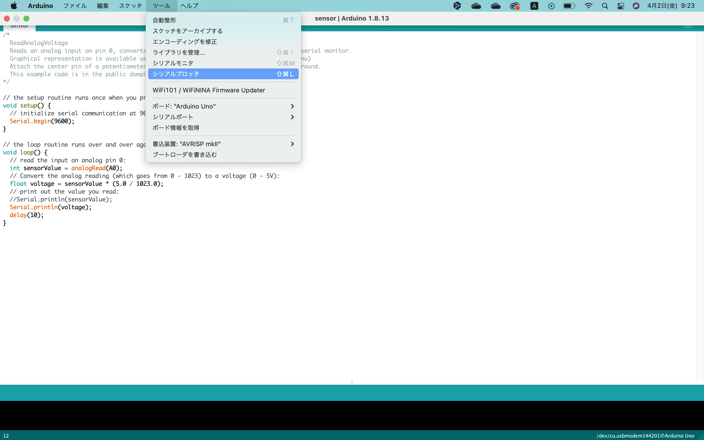

ようこそ☺︎


・Arduino Uno
・筋電センサ
購入したサイトはここ
・ジャンパーワイヤ

Arduino側の、5VとGNDとA0に繋ぎます。

筋電センサ側に、
・5V 👉 プラス
・GND 👉 マイナス
・A0 👉 SIG
①
Serial.begin(9600);
シリアルを9600に指定する。
②
int sensorValue = analogRead(A0);
先程のA0をここで読み込み、sensorValueの箱に入れる。
③
float voltage = sensorValue * (5.0 / 1023.0);
読み込んだ値を、0-5Vに変換してvoltageの箱に入れる。
④
Serial.println(voltage);
シリアルにvoltageを書き出す。
⑤
delay(10);
delayで書き出す頻度を制御する。

左上のツールを開いて、画像の通りにボードをArduino Unoに設定する。

次に、シリアルポートもArduino Unoに設定する。

最後に書き込みボタンを押す。

ツールからプロッタを選択する。
これで筋電値が取れるようになりました。
この筋電について詳細を知りたい方は、
ここに
飛んでみてください。
Fin.